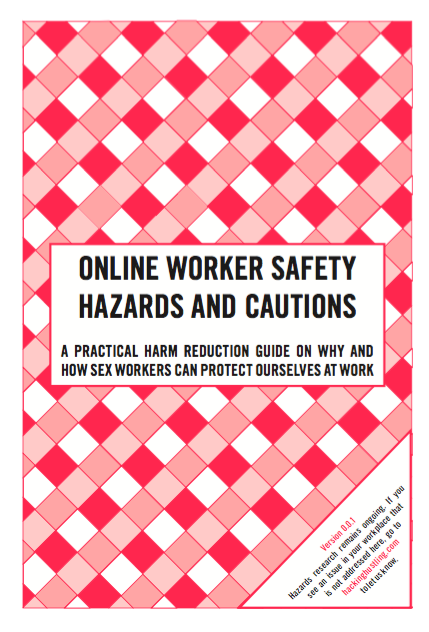

A new federal law called SESTA (Stop Enabling Sex Traffickers Act) has endangered sex workers and resulted in their erasure from online platforms that once provided work, community and safety.
Organized in collaboration with Melissa Gira Grant and Danielle Blunt and Eyebeam, Hacking//Hustling: A Platform for Sex Workers in a Post-SESTA World is a two-day program of conversations and tactical skill sharing led by sex workers to generate knowledge that has been erased in the wake of SESTA.
Hacking//Hustling is a space for digital rights advocates, journalists, and allied communities to come learn from sex workers and better understand the developing effects of SESTA on internet freedom for all. We believe that sex workers are the experts on their own experience and that an internet that is safe for sex workers is an internet that is safe for almost everyone.
@ Eyebeam //
199 Cook St.
Brooklyn, NY
09/20/18 //
6 to 9:30pm //
RSVP (free) //
Part 1 of Hacking//Hustling is a panel discussion featuring presentations from sex workers and sex worker rights advocates discussing censorship, discrimination and policing in the wake of SESTA.
Panelists include:
Lorelei Lee, writer and sex worker
Kiara St. James, CEO and a co-founder of New York Transgender Advocacy Group (NYTAG)
Bardot Smith, analyst & dominatrix
Ashley Paige, international travel companion & connoisseur of kink
09/22/18 //
1 to 4pm //
GET TICKETS //
In conjunction with our panel discussion, we’ll be hosting a half-day of workshops (in collaboration with t4tech) where sex workers and digital rights advocates will work together to address the harms of SESTA with a collaborative approach grounded in principles of harm reduction. We will learn how to to protect data, have safer communications, and build stronger online communities.
In an an effort to support this program and its participants and combat systemic inequities, we are implementing the following sliding-scale ticket pricing for this program. Sex workers will be admitted for free.
Suggested donations:
$45 Advocate/Policy-maker
$25 Supporter
$15 Student/Activist
$0 Sex worker
Throughout Hacking//Hustling participants are invited to view "Whores Will Rise: Protest Art & Resistance Ephemera Against FOSTA/SESTA," a pop up community art show. Curated by Brit Schulte, the show highlights protest art/resistance ephemera from recent demonstrations against SESTA/FOSTA and calling for decriminalization and labor rights for all sex working/trading people.
ORGANIZERS //
Melissa Gira Grant (she/her) is a senior staff reporter covering criminal justice at The Appeal and the author of Playing the Whore: The Work of Sex Work (Verso). She has been a contributing writer at the Village Voice and Pacific Standard, and her work has also appeared in the Guardian, the New York Times, BuzzFeed News, the New York Review of Books, and the Nation, among others. Her essays are collected in Best Sex Writing, The Feminist Utopia Project, and Where Freedom Starts: Sex Power Violence #MeToo. She lives in New York.
@melissagira
Danielle Blunt (she/her) is a NYC-based Dominatrix, a full-spectrum doula and sex worker rights activist. She studies power dynamics through kinesthetic modalities and researches the intersection of public health, sex work and equitable access to tech. Her work has appeared in Kink & Code, Tits & Sass and Psychology Today. She enjoys watching her community thrive and making men cry.
@mistressblunt
PANELISTS //
Kiara St. James has been a community organizer and public speaker for over 20 years. She has been instrumental in changing shelter policies that were discriminatory towards the Trans community. Kiara is the Founder and current Executive director of the New York Transgender Advocacy Group (NYTAG inc), A grassroots 501c-3 non-profit organization, that is Trans-led and intent on creating new opportunities for the Trans community, through various partnerships and innovative initiatives.
@kiaraditmas
Bardot Smith is the alias of an analyst, producer, and demimondaine living on the East Coast. She focuses her time on private consulting, erotic media production, and writing on economics and sex under capitalism. She enjoys pissing on men. She is currently studying for her Series 65.
@ICONOCLASTIAE
Lorelei Lee is a writer, sex worker, and activist. She began doing sex work in 2000 and has worked both on and offline. Her fiction, nonfiction, and poetry have appeared in Salon, The Rumpus, WIRED, Denver Quarterly, the Los Angeles Review of Books, BuzzFeed, The Establishment, and $pread magazine, as well as in the anthologies Hos, Hookers, Call Girls and Rent Boys, Off the Set, The Feminist Porn Book, and Coming Out Like A Porn Star.
@MissLoreleiLee
Ashley Paige is an International Travel Companion & Connoisseur of Kink
@AshleyPaigeNYC
WORKSHOP FACILITATORS //
t4tech is a free and accessible resource for transgender and GNC people to share and pick up skills of software engineering, digital technologies, and computer science. We work to enable trans and GNC people with the skillsets required to engage with and shape the tech community.
Daly Barnett is a software engineer and privacy advocate. She is the founder of t4tech, an organization that facilitates free tech education workshops for trans and gender-nonconforming people.
t4tech
Sophie is a Senior Data Scientist at Metis where she is a bootcamp instructor and leads curriculum development. Sophie works in deep learning and data science ethics. Through t4tech Sophie helps provide free trans-centered classes in programming and data science.
soph.info
CURATOR //
Brit Schulte (they/them) is a community organizer and under-employed sex working art historian currently splitting time between Chicago and New York City. They are a member of the Support Ho(s)e collective, Survived & Punished NYC and are the lead coordinator for the Justice for Alisha Walker Defense Campaign. Brit’s current organizing efforts center criminalized survivors, prison abolition and the decriminalization of all sex work/trade.
t4tech resources from Hacking // Hustling Exchange:
Future Perfect Session: Dystopia Now (presented by MGG & Blunt):
Reporting on SESTA (from MGG):
DOWNLOAD //

Eyebeam is an accessible space. The 199 Cook Street entrance is accessible via a ramp. All-gender restrooms on the first floor are wheelchair accessible and the second floor all-gender restrooms are wheelchair accessible via an elevator. If you require accommodation, please contact J. Soto at least two weeks prior to the event via email at j.soto@eyebeam.org or call (347)-378- 9163 x 1006 (voice only). Eyebeam's nearest train station is the L-Morgan station. The L-Morgan station does not have an elevator. The next closest station is the JM-Flushing which does have an elevator. For information on accessible transit on the MTA, visit this link.